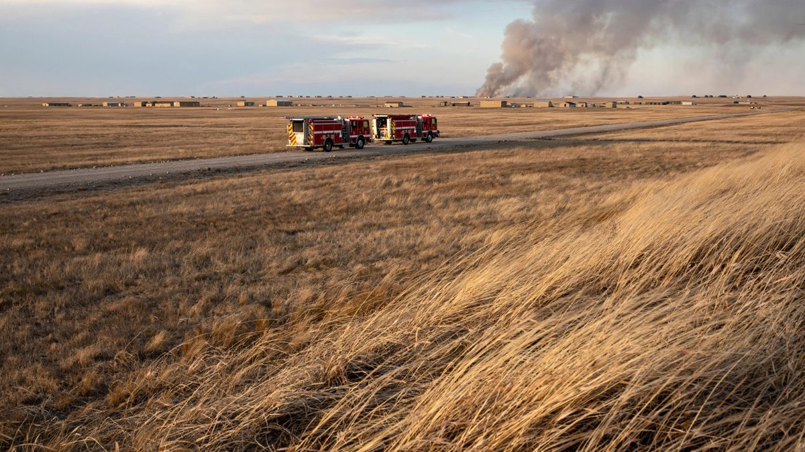

वेनराइट आग ग्रेनेड लॉन्चर रेंज पर शुरू हुई, सेना ने कहा
अधिकारियों ने गुरुवार को कहा कि 17 अक्टूबर को CFB वेनराइट में लगी आग नियमित प्रशिक्षण के दौरान स्वचालित ग्रेनेड लॉन्चर रेंज पर शुरू हुई, उस खतरा क्षेत्र के अंदर रही जहां दमकलकर्मी प्रवेश नहीं कर सकते थे, और फिर हवा बदलने पर दूसरे प्रशिक्षण क्षेत्र की ओर बढ़ गई। 39 घायलों में से 27 अब भी अस्पताल में हैं।

मुख्य बिंदु
- कनाडा के सैन्य अधिकारियों ने गुरुवार, 22 अक्टूबर 2026 को कहा कि CFB वेनराइट में चार सैनिकों की जान लेने वाली आग बेस के स्वचालित ग्रेनेड लॉन्चर रेंज पर नियमित प्रशिक्षण के दौरान शुरू हुई थी,…
- हैनराहन ने कहा कि आग पहले रेंज के स्थायी खतरा क्षेत्र 2 के अंदर ही रही, एक ऐसा इलाका जो बिना फटे गोला बारूद से दूषित हो सकता है। दमकलकर्मी उस पर सीधे हमला नहीं कर सके, इसलिए रेंज कंट्रोल और बेस के…
- कनाडा के सशस्त्र बलों ने कहा कि 39 घायलों में से 27 गुरुवार को भी अस्पताल में थे और 12 का इलाज करके छुट्टी दे दी गई थी। Canadian Press ने बताया कि अस्पताल में बचे लोगों में 13 की हालत गंभीर थी। उस…
अपडेट 05:28 UTC, 23 अक्टूबर 2026
कनाडा के सैन्य अधिकारियों ने गुरुवार, 22 अक्टूबर 2026 को कहा कि CFB वेनराइट में चार सैनिकों की जान लेने वाली आग बेस के स्वचालित ग्रेनेड लॉन्चर रेंज पर नियमित प्रशिक्षण के दौरान शुरू हुई थी, Reuters ने बताया। कनाडाई बलों की प्रोवोस्ट मार्शल ब्रिगेडियर जनरल वैनेसा हैनराहन ने पत्रकारों से कहा कि आग उसी रेंज पर उस समय चल रहे नियमित सैन्य प्रशिक्षण के कारण शुरू हुई। उन्होंने यह नहीं कहा कि क्या असली विस्फोटक गोलों की फायरिंग से आग लगी थी, The Globe and Mail ने बताया।
हैनराहन ने कहा कि आग पहले रेंज के स्थायी खतरा क्षेत्र 2 के अंदर ही रही, एक ऐसा इलाका जो बिना फटे गोला बारूद से दूषित हो सकता है। दमकलकर्मी उस पर सीधे हमला नहीं कर सके, इसलिए रेंज कंट्रोल और बेस के फायरहॉल ने दिन भर उसकी निगरानी की। हवा की दिशा और रफ्तार में बाद में आए बदलाव ने आग की तीव्रता बहुत बढ़ा दी, उन्होंने कहा। इसके बाद आग दूसरे प्रशिक्षण क्षेत्र में फैल गई और नकली दुश्मन ठिकानों पर हमले का अभ्यास कर रहे सैनिकों की स्थितियों तक पहुंच गई।
कनाडा के सशस्त्र बलों ने कहा कि 39 घायलों में से 27 गुरुवार को भी अस्पताल में थे और 12 का इलाज करके छुट्टी दे दी गई थी। Canadian Press ने बताया कि अस्पताल में बचे लोगों में 13 की हालत गंभीर थी। उस दिन करीब 84 सैनिक ग्रेनेड रेंज और दूसरे प्रशिक्षण क्षेत्र में बंटे थे, वे 3rd बटालियन, Princess Patricia's Canadian Light Infantry की चार्ली कंपनी से थे, और वे लातविया में नियोजित तैनाती से पहले प्रशिक्षण कर रहे थे।
हैनराहन ने कहा कि करीब 30 सैन्य पुलिसकर्मी गवाहों के बयानों और घटनास्थल की जांच कर रहे हैं, और अब तक आपराधिक कारण का कोई सबूत नहीं है और प्राकृतिक गैस ढांचे के शामिल होने का कोई संकेत नहीं है। अब तीन जांचें चल रही हैं, सैन्य पुलिस, सैन्य जांच बोर्ड और अल्बर्टा के मुख्य चिकित्सा परीक्षक की अगुवाई में, और अधिकारियों ने कहा कि काम में पहले बताए गए करीब एक महीने से ज्यादा समय लगेगा। मेजर जनरल वेड रटलैंड ने गुरुवार को एडमॉन्टन में पत्रकारों से कहा कि सेना आग तक ले जाने वाली घटनाओं का ईमानदार ब्योरा देने के लिए प्रतिबद्ध है। Environment Canada ने कहा कि शनिवार, 17 अक्टूबर को तेजी से बढ़े ठंडे मोर्चे ने अल्बर्टा के बड़े हिस्से में 90 से 130 किलोमीटर प्रति घंटे की हवाएं चलाईं, और उस दिन स्थानीय समय दोपहर 2:14 बजे वेनराइट के लिए पीली हवा चेतावनी जारी की गई थी।
अपडेट 21:28 UTC, 19 अक्टूबर 2026
प्रधानमंत्री मार्क कार्नी ने सोमवार, 19 अक्टूबर 2026 को संसद को बताया कि आग का कारण अभी तक पता नहीं चला है और आग लगने का स्रोत तय नहीं हुआ है, Reuters ने बताया। कार्नी ने कहा कि सेना और रॉयल कैनेडियन माउंटेड पुलिस के 50 जांचकर्ता मौके पर हैं, ताकि यह पता लगाया जा सके कि यह आपदा कैसे हुई। CNN ने बताया कि पूरी जांच का नेतृत्व कैनेडियन फोर्सेस नेशनल इन्वेस्टिगेशन सर्विस कर रही है, जिसे रॉयल कैनेडियन माउंटेड पुलिस का समर्थन मिल रहा है।
कार्नी ने कहा कि 39 लोग अभी भी अस्पताल में हैं, जिनमें 19 की हालत गंभीर है, Reuters ने बताया। उन्होंने कहा, "यह नुकसान राष्ट्र के हर कोने को छूता है।" सांसदों ने एक मिनट का मौन रखा और दल के नेताओं ने हाउस ऑफ कॉमन्स में श्रद्धांजलि दी, Global News ने बताया। किंग चार्ल्स और क्वीन कैमिला ने कहा कि वे बहुत स्तब्ध और दुखी हैं और उन्होंने जान गंवाने वालों के परिवारों और सभी घायलों के प्रति अपनी गहरी संवेदना भेजी, Sky News ने बताया।
अपडेट 04:54 UTC, 19 अक्टूबर 2026
Reuters ने 19 अक्टूबर 2026 को बताया कि शनिवार को आग शुरू होने के समय Princess Patricia's Canadian Light Infantry की तीसरी बटालियन के 85 सैनिक असली गोला बारूद के साथ उच्च तीव्रता वाले युद्ध प्रशिक्षण में थे। आग से पहले हवाएं 50 किलोमीटर प्रति घंटे से कम थीं और बाद में 96 किलोमीटर प्रति घंटे तक पहुंच गईं, मेजर जनरल वेड रटलैंड ने रविवार को पत्रकारों को बताया।
अल्बर्टा की प्रीमियर डेनिएल स्मिथ ने कहा कि कई घायलों को हफ्तों और महीनों तक विशेष और गहन चिकित्सा देखभाल की जरूरत होगी, Reuters ने बताया। BBC ने बताया कि आग अब काबू में है और दमकल तथा बचाव दल फिर से आग भड़कने की निगरानी के लिए मौके पर बने हुए हैं। रटलैंड ने उम्मीद जताई कि आग की पूरी जांच में कम से कम एक महीना लगेगा, CBC News ने बताया।
अपडेट 22:57 UTC, 18 अक्टूबर 2026
मेजर जनरल वेड रटलैंड ने रविवार दोपहर एक प्रेस कॉन्फ्रेंस में CFB वेनराइट आग में मारे गए चार सेवा सदस्यों के नाम बताए। CBC News के अनुसार वे हैं नॉर्थ वैंकूवर के प्राइवेट एइडन गोल्डिंग, सस्केचेवान के प्रिंस अल्बर्ट के प्राइवेट शॉन फैरेल, ब्रिटिश कोलंबिया के लैंगली के प्राइवेट हेडन लाइकेमार्क और एडमॉन्टन के सार्जेंट मॉर्गन वोंग। CNN ने बताया कि रटलैंड ने मृतकों को तीन प्राइवेट और एक सार्जेंट बताया।
अल्बर्टा की प्रीमियर डेनिएल स्मिथ ने कहा कि रविवार दोपहर 39 लोग अस्पताल में थे और कम से कम 19 की हालत गंभीर थी, CNN ने बताया। प्रांत के एक स्वास्थ्य अधिकारी ने कहा कि आठ घायल स्थिर हैं और 12 को हल्की चोटें हैं और वे चल सकते हैं। CNN के अनुसार रविवार दोपहर तक अल्बर्टा के अस्पतालों में कोड ऑरेंज हटा लिया गया था। इमरजेंसी हेल्थ सर्विसेज अल्बर्टा ने वेनराइट के लिए 22 ग्राउंड एंबुलेंस, छह फिक्स्ड विंग एयर एंबुलेंस और दो हेलीकॉप्टर समेत 30 यूनिट भेजीं।
रटलैंड ने कहा कि 3rd Battalion, Princess Patricia's Canadian Light Infantry की Charlie Company की प्रशिक्षण गतिविधि के दौरान घास में आग लगी। सैनिक लाइव गोला बारूद के साथ उच्च तीव्रता वाले युद्ध प्रशिक्षण के तहत सेक्शन अटैक और ग्रेनेड अभ्यास कर रहे थे। उन्होंने कहा कि करीब एक किलोमीटर दूर कई घंटों से एक आग जल रही थी, और रेंज कंट्रोल ने प्रशिक्षण जारी रहने दिया क्योंकि वह आग नियंत्रण में थी और सैनिकों के पास आने की उम्मीद नहीं थी। फिर असामान्य रूप से तेज हवाओं ने आग का रुख बदल दिया और आग ने एक किलोमीटर की दूरी 30 से 60 सेकंड में तय कर ली। रटलैंड ने कहा कि उन्होंने ऐसा कभी नहीं देखा।
रटलैंड ने कहा कि कोई धमाका नहीं हुआ, कारण अभी भी अज्ञात है, और जांचकर्ता अभी यह नहीं कह सकते कि गोला बारूद की कोई भूमिका थी या नहीं। उन्होंने कहा कि सेना को नहीं लगता कि इसमें कोई बाहरी हस्तक्षेप था या तेल और गैस ढांचा जुड़ा था। इससे Global News को रविवार सुबह अज्ञात सैन्य सूत्रों द्वारा दी गई गैस लाइन वाली बात खारिज होती है, जिसकी अधिकारियों ने कभी पुष्टि नहीं की थी। रटलैंड ने कहा कि जांच तय करेगी कि यह त्रासदी रोकी जा सकती थी या नहीं। CNN के अनुसार बटालियन कनाडा के NATO मिशन के तहत वसंत में लातविया जाने की तैयारी कर रही थी।
अपडेट 19:30 UTC, 18 अक्टूबर 2026
कनाडाई सशस्त्र बलों ने रविवार को कहा कि इस बात का कोई संकेत नहीं है कि CFB वेनराइट की आग आतंकवादी गतिविधि का परिणाम थी और घटना की जांच जारी है, द कैनेडियन प्रेस ने बताया। वेनराइट नगर जिला ने कहा कि आग शनिवार देर रात रोकी गई और रविवार को उसे नियंत्रण में बताया गया। सीबीसी न्यूज़ ने बताया कि टीमें प्रशिक्षण क्षेत्र में काम कर रही थीं और निवासियों को दूर रहने को कहा गया था। रक्षा मंत्री डेविड मैकगिन्टी ने रविवार को वेनराइट स्वास्थ्य केंद्र का दौरा किया और पीड़ितों के परिवारों व नगर नेताओं से मुलाकात की, सीबीसी ने बताया। राष्ट्रीय रक्षा विभाग ने कहा कि चारों मृत सेवा सदस्यों के नाम तब तक जारी नहीं किए जाएंगे जब तक सभी परिजनों को सूचित नहीं कर दिया जाता। प्रधानमंत्री मार्क कार्नी ने रविवार को कहा कि मैदान पर मौजूद अधिकारी रविवार को बाद में विस्तृत विवरण और औपचारिक ब्रीफिंग देंगे। रविवार दोपहर तक वेनराइट में वह विस्तृत ब्रीफिंग अभी नहीं हुई थी, और अधिकारियों ने घायलों की आधिकारिक संख्या अब भी जारी नहीं की है। अल्बर्टा हेल्थ सर्विसेज ने कहा है कि शनिवार को 20 लोगों को भर्ती किया गया था। कुछ रिपोर्टों में घायलों की अधिक संख्या गुमनाम सैन्य स्रोतों पर आधारित है और अधिकारियों ने उसकी पुष्टि नहीं की है।
अपडेट 17:07 UTC, 18 अक्टूबर 2026
प्रधानमंत्री मार्क कार्नी ने रविवार दोपहर एक सार्वजनिक संबोधन में पुष्टि की कि CFB वेनराइट की आग में चार सेवा सदस्य मारे गए और दर्जनों अन्य गंभीर रूप से घायल हुए, PA मीडिया ने रिपोर्ट किया। कार्नी ने कहा कि मारे गए लोगों के परिवारों को सूचित कर दिया गया है, स्थिति अभी भी विकसित हो रही है, और वरिष्ठ सैन्य व सरकारी अधिकारी रविवार को बाद में घटना का विस्तृत विवरण देंगे।
कार्नी ने कहा कि देश भर की संघीय इमारतों पर कनाडा के झंडे आधे झुके रहेंगे। "सभी कनाडाई CFB वेनराइट के सेवा सदस्यों, उनके परिवारों और उनके समुदाय के साथ खड़े हैं," उन्होंने कहा। The Sun ने रिपोर्ट किया कि कार्नी ने आग को घरेलू धरती पर कनाडा की सेना के लिए शांतिकाल की सबसे खराब त्रासदियों में से एक बताया, और कहा कि राष्ट्र शोक में है।
प्रधानमंत्री द्वारा पुष्ट चार की संख्या इस घटना का पहला आधिकारिक मृत्यु आंकड़ा है। यह पहले के अपडेट की स्थिति को बदलता है, जहां अधिकारियों ने कोई आधिकारिक संख्या जारी नहीं की थी। सैन्य स्रोतों का हवाला देते हुए Global News द्वारा रिपोर्ट की गई कम से कम सात मौतों की पुष्टि अधिकारियों ने नहीं की है, और किसी कारण की आधिकारिक पुष्टि नहीं हुई है।
अपडेट 14:52 UTC, 18 अक्टूबर 2026
वेनराइट के मेयर ब्रूस पग ने इस घटना को समुदाय की अब तक की सबसे बड़ी सामूहिक हताहत घटना बताया, The Sun ने 18 अक्टूबर 2026 को रिपोर्ट किया।
शनिवार, 17 अक्टूबर 2026 की रात एक दर्जन से अधिक कैनेडियन आर्म्ड फोर्सेज कर्मी पैराशूट से वेनराइट में उतरे और विस्फोट तथा आग में मदद के लिए स्थानीय स्वास्थ्य केंद्र पहुंचे, Global News के वरिष्ठ संवाददाता जेफ सेम्पल ने X पर बताया। Canadian Press की तस्वीरों में खोज और बचाव तकनीशियनों को अतिरिक्त देखभाल देने के लिए पैराशूट से इलाके में तैनात किया गया भी दिखा।
The Sun ने रिपोर्ट किया कि आग बेस से बाहर फैलते समय हवाओं की रफ्तार 62 मील प्रति घंटा तक पहुंच गई। अधिकारियों ने अभी तक मौतों या घायलों का आधिकारिक आंकड़ा जारी नहीं किया है, और कारण की भी पुष्टि नहीं की है। सैन्य सूत्रों के हवाले से Global News द्वारा बताई गई कम से कम सात मौतों की पुष्टि अधिकारियों ने अभी तक नहीं की है।
अपडेट 09:16 UTC, 18 अक्टूबर 2026
कैनेडियन आर्म्ड फोर्सेज ने 18 अक्टूबर 2026 की एक विज्ञप्ति में पुष्टि की कि CFB वेनराइट की घटना में लोग मारे गए हैं और घायल हुए हैं। विज्ञप्ति के अनुसार 17 अक्टूबर 2026 को स्थानीय समय अनुसार शाम करीब 4:00 बजे बेस के प्रशिक्षण क्षेत्र के भीतर आग लगी और सैन्य तथा नागरिक आपात सेवाओं के काम करते हुए आग प्रशिक्षण क्षेत्र की सीमाओं से बाहर तेजी से फैल गई।
सशस्त्र बलों ने कहा कि प्रभाव का पूरा आकलन अभी चल रहा है। प्रभावित लोगों की मदद करना और निकट संबंधियों को सूचना देना तत्काल प्राथमिकता है, और उस प्रक्रिया के पूरा होने तक मृतकों या घायलों का विवरण पुष्टि नहीं किया जाएगा। जानकारी उपलब्ध होने पर और विवरण दिया जाएगा, विज्ञप्ति में कहा गया। आधिकारिक आंकड़ा अभी जारी नहीं हुआ है, इसलिए सैन्य सूत्रों के हवाले से Global News द्वारा बताई गई कम से कम सात मौतें अधिकारियों द्वारा अभी पुष्टि नहीं की गई हैं, और किसी कारण की आधिकारिक पुष्टि नहीं हुई है।
अपडेट 07:27 UTC, 18 अक्टूबर 2026
कैनेडियन फोर्सेस बेस वेनराइट में विस्फोट और आग के बाद कम से कम सात लोग मारे गए हैं और दर्जनों घायल हैं, कई सैन्य सूत्रों ने Global News को बताया, यह रिपोर्ट 18 अक्टूबर 2026 को प्रकाशित हुई। अधिकारियों ने उस आंकड़े की पुष्टि नहीं की है, और रक्षा मंत्री डेविड मैकगिन्टी ने अभी तक मृतकों या घायलों की आधिकारिक संख्या नहीं दी है।
उन्हीं सूत्रों ने Global News को बताया कि लाइव फायर प्रशिक्षण अभ्यास ने बेस पर गैस लाइन या गैस कुएं को टक्कर मारी और विस्फोट हुआ। अधिकारियों ने कारण की पुष्टि नहीं की है, और रॉयल कैनेडियन माउंटेड पुलिस की जांच अभी जारी है।
शनिवार, 17 अक्टूबर 2026 की देर रात, वेनराइट नगर जिले ने कहा कि आग पर काबू पाया जा रहा है, और The Sun ने बताया कि स्थानीय समय रात 11 बजे अधिकारियों ने कहा कि संपत्ति और महत्वपूर्ण ढांचा सुरक्षित है। शहर के लिए खाली करने का कोई आदेश जारी नहीं हुआ।
एडमंटन के अस्पतालों ने कोड ऑरेंज घोषित किया, जो अधिक मरीजों के लिए इस्तेमाल होने वाला आपदा प्रोटोकॉल है, CBC ने बताया। रॉयल अलेक्जेंड्रा अस्पताल के आपातकालीन डॉक्टर डॉ. वॉरेन थिर्स्क ने CBC को बताया कि वेनराइट के स्वास्थ्य केंद्र पूरी तरह भर गए थे और उन्होंने इसे 15 से 25 साल में एक बार आने वाली आपदा कहा। मरीजों को एडमंटन भर के अस्पतालों में भेजा गया। सस्कैचेवान ने मदद के लिए संसाधन भेजे, प्रीमियर स्कॉट मो ने कहा, और Shock Trauma हवाई बचाव सेवा ने एडमंटन और सस्काटून से हेलीकॉप्टर भेजे।
अपडेट 03:26 UTC, 18 अक्टूबर 2026
रक्षा मंत्री डेविड मैकगिन्टी ने शनिवार रात कहा कि कैनेडियन फोर्सेस बेस वेनराइट में हुई घटना में लोग मारे गए और घायल हुए। एसोसिएटेड प्रेस और CNN के अनुसार मैकगिन्टी ने कहा कि उन्हें यह बताते हुए दुख है कि बेस पर हुई एक घटना के कारण मौतें और घायल दोनों हुए हैं।
मैकगिन्टी ने मृतकों या घायलों की संख्या नहीं दी और यह नहीं कहा कि घटना किस कारण हुई। उन्होंने स्थिति को बहुत, बहुत सक्रिय और नाजुक बताया, कहा कि रॉयल कैनेडियन माउंटेड पुलिस शामिल है और जल्द ही जांच शुरू होगी। उन्होंने कहा कि आग जमीन पर अभी भी जारी थी और सशस्त्र बल, संघीय सरकार तथा प्रांतीय और स्थानीय अधिकारी समर्थन जुटाने के लिए मिलकर काम कर रहे थे।
CNN ने बताया कि अग्निशामक आग को आवासीय क्षेत्रों तक पहुंचने से रोकने के लिए अभी भी काम कर रहे थे। वेनराइट नगर जिले ने कहा कि आग बेस की बाड़ पार कर चुकी थी और कई क्षेत्रों के अग्निशामकों के साथ उसे सक्रिय रूप से संभाला जा रहा था। खाली करने का कोई आदेश जारी नहीं हुआ था। अधिकारियों ने निवासियों से क्षेत्र से दूर रहने, सड़कें खाली रखने और गंभीर चिकित्सा जरूरत के अलावा वेनराइट स्वास्थ्य केंद्र न जाने को कहा।
विपक्षी नेता पियरे पॉइलिव्र ने कहा कि उन्होंने आग के बारे में मैकगिन्टी और प्रधानमंत्री मार्क कार्नी से बात की, आपातकालीन कर्मियों को धन्यवाद दिया और लोगों से वेनराइट के लिए प्रार्थना करने को कहा।
प्रधानमंत्री मार्क कार्नी ने कहा कि शनिवार, 17 अक्टूबर 2026 को अल्बर्टा के पूर्व मध्य भाग में स्थित कैनेडियन फोर्सेस बेस वेनराइट में एक गंभीर घटना से बड़ी आग लग गई। जिले के अनुसार आग तेज हवाओं में तेजी से फैली और बेस के पास से वेनराइट नगर जिला नंबर 61 में पहुंच गई। रॉयटर्स के अनुसार शनिवार शाम आपातकालीन दल आग पर काम कर रहे थे और खाली करने का कोई आदेश जारी नहीं हुआ था।
कार्नी ने पूर्वी समय अनुसार रात 8:05 बजे X पर लिखा। उन्होंने लिखा कि अल्बर्टा के CFB वेनराइट में एक गंभीर घटना से बड़ी आग लगी है और प्रभावित सभी बहादुर महिलाओं और पुरुषों के प्रति उनकी संवेदना है। कार्नी ने कहा कि ओटावा अल्बर्टा सरकार और स्थानीय अधिकारियों के साथ मिलकर काम कर रहा है और वह और प्रीमियर डैनियल स्मिथ करीबी संपर्क में हैं।
करीब 10 मिनट बाद स्मिथ ने X पर लिखा कि उनकी सरकार CFB वेनराइट में एक महत्वपूर्ण और दुखद आग के बारे में जान रही है जो कई सैन्य कर्मियों को प्रभावित कर रही है। उन्होंने पहले उत्तरदाताओं और देखभाल व समर्थन देने वालों को धन्यवाद दिया। रक्षा मंत्री डेविड मैकगिन्टी ने पूर्वी समय अनुसार रात 8:54 बजे X पर कहा कि सशस्त्र बलों ने उन्हें गंभीर घटना के बारे में जानकारी दी है।
आग ग्रामीण जिले में पहुंची
वेनराइट नगर जिला नंबर 61 ने INCIDENT UPDATE #001 शीर्षक वाले फेसबुक पोस्ट में कहा कि कैनेडियन फोर्सेस बेस के पास शुरू हुई बड़ी आग तेज हवाओं के कारण तेजी से फैली और जिले में पहुंच गई। रॉयटर्स के अनुसार नगरपालिका ने कहा कि आग उस दिन पहले ही बेस की बाड़ पार करके पास के जिले में पहुंच गई थी और उसे सक्रिय रूप से संभाला जा रहा था।
आग ने एक मतदान स्थल भी बंद करा दिया। इलेक्शंस अल्बर्टा ने कहा कि उसे बड़ी आग की जानकारी मिली है और उसने अल्बर्टा के प्रांतीय जनमत संग्रह के लिए वेनराइट कम्युनिप्लेक्स का अग्रिम मतदान स्थल बंद कर दिया है। निर्वाचन क्षेत्र 86 के मतदाता अभी भी लॉयडमिन्स्टर के बॉर्डर इन या वर्मिलियन के वर्मिलियन एल्क्स हॉल में अग्रिम मतदान कर सकते हैं। जनमत संग्रह का दिन सोमवार, 19 अक्टूबर है।
अधिकारियों ने क्या नहीं कहा
राष्ट्रीय रक्षा ने शनिवार शाम चैट्सवर्थ बैनर को ईमेल में कहा कि वह वेनराइट, अल्बर्टा में एक घटना से अवगत है और उसके कर्मियों, उनके परिवारों और आसपास के समुदाय की सुरक्षा उसकी सबसे बड़ी प्राथमिकता है। विभाग ने कहा कि वह स्थिति पर करीबी नजर रख रहा है और जानकारी उपलब्ध होने और पुष्टि होने पर और जानकारी देगा।
उस बयान में कोई कारण नहीं दिया गया, यह नहीं कहा गया कि कोई घायल हुआ या नहीं, और शामिल इकाइयों के नाम नहीं लिए गए। शनिवार शाम तक अधिकारियों ने यह नहीं बताया था कि आग किस कारण लगी, कितने लोग घायल हुए, या कोई प्रशिक्षण अभ्यास चल रहा था या नहीं। कुछ रिपोर्टों में विस्फोट का वर्णन किया गया है। किसी आधिकारिक स्रोत ने इसकी पुष्टि नहीं की है। मैकगिन्टी ने बाद में मौतों और घायलों की पुष्टि की, लेकिन अधिकारियों ने अभी भी हताहतों की संख्या या कारण नहीं दिया है। पूर्वी समय अनुसार रात करीब 10:05 बजे तक क्षेत्र के लिए कोई प्रांतीय आपातकालीन चेतावनी सक्रिय नहीं थी।
एडमॉन्टन से करीब 200 किलोमीटर दक्षिणपूर्व में स्थित CFB वेनराइट कनाडाई सेना का एक बड़ा प्रशिक्षण बेस है जिसका उपयोग देशभर की इकाइयाँ करती हैं। रॉयटर्स ने इसे कनाडा के सबसे व्यस्त सेना बेसों में से एक कहा। अधिकारियों के और जानकारी देने पर यह खबर अपडेट होगी।
स्रोत
Reuters, Elections Alberta, Chatsworth Banner, CNN, Associated Press, Global News via The Sun, CBC live updates, National Defence / Canadian Armed Forces
टाइमलाइन
- Oct 17, 2026कैनेडियन फोर्सेस बेस वेनराइट के पास शुरू हुई बड़ी आग तेज हवाओं के कारण तेजी से फैलती है और वेनराइट नगर जिला नंबर 61 में पहुंच जाती है।
- Oct 17, 2026प्रधानमंत्री मार्क कार्नी पूर्वी समय अनुसार रात 8:05 बजे X पर लिखते हैं कि CFB वेनराइट में बड़ी आग वाली गंभीर घटना हुई है। प्रीमियर डैनियल स्मिथ करीब 10 मिनट बाद लिखती हैं और इसे महत्वपूर्ण और दुखद आग कहती हैं।
- Oct 17, 2026इलेक्शंस अल्बर्टा वेनराइट कम्युनिप्लेक्स का अग्रिम मतदान स्थल बंद करता है। निर्वाचन क्षेत्र 86 के मतदाता अभी भी लॉयडमिन्स्टर या वर्मिलियन में अग्रिम मतदान कर सकते हैं।
- Oct 17, 2026रक्षा मंत्री डेविड मैकगिन्टी शनिवार रात कहते हैं कि बेस पर हुई घटना के कारण मौतें और घायल दोनों हुए हैं। वह हताहतों की संख्या या कारण नहीं देते।
- Oct 17, 2026शनिवार देर रात, वेनराइट नगर जिला कहता है कि आग पर काबू पाया जा रहा है। मरीजों को वेनराइट से भेजे जाने पर एडमंटन के अस्पताल कोड ऑरेंज घोषित करते हैं।
- Oct 18, 2026Global News कई सैन्य सूत्रों के हवाले से बताता है कि कम से कम सात लोग मारे गए हैं, दर्जनों घायल हैं, और लाइव फायर अभ्यास ने गैस लाइन या गैस कुएं को टक्कर मारी। अधिकारियों ने आंकड़े या कारण की पुष्टि नहीं की है।
- Oct 18, 2026राष्ट्रीय रक्षा और कैनेडियन आर्म्ड फोर्सेज मौतों और घायलों की पुष्टि करते हुए विज्ञप्ति जारी करते हैं। इसमें कहा गया कि आग 17 अक्टूबर 2026 को स्थानीय समय अनुसार शाम करीब 4 बजे प्रशिक्षण क्षेत्र में लगी, और निकट संबंधियों को सूचना दिए जाने तक हताहतों का विवरण पुष्टि नहीं किया जाएगा।
- Oct 17, 2026शनिवार रात एक दर्जन से अधिक कैनेडियन आर्म्ड फोर्सेज कर्मी पैराशूट से वेनराइट में उतरकर मदद के लिए स्थानीय स्वास्थ्य केंद्र पहुंचते हैं, Global News ने रिपोर्ट किया। Canadian Press की तस्वीरों में खोज और बचाव तकनीशियनों को अतिरिक्त देखभाल देने के लिए पैराशूट से तैनात किया गया दिखा।
- Oct 18, 2026प्रधानमंत्री मार्क कार्नी एक सार्वजनिक संबोधन में पुष्टि करते हैं कि CFB वेनराइट आग में चार सेवा सदस्य मारे गए और दर्जनों अन्य गंभीर रूप से घायल हुए, कहते हैं कि मारे गए लोगों के परिवारों को सूचित कर दिया गया है और संघीय इमारतों पर झंडे आधे झुके रहेंगे।
- Oct 18, 2026कनाडाई सशस्त्र बलों का कहना है कि आग के आतंकवाद होने का कोई संकेत नहीं है। वेनराइट नगर जिला कहता है कि आग नियंत्रण में है। रक्षा मंत्री डेविड मैकगिन्टी वेनराइट जाकर पीड़ितों के परिवारों से मिलते हैं। राष्ट्रीय रक्षा चारों मृतकों के नाम परिजनों को सूचित किए जाने तक रोकता है।
- Oct 18, 2026रविवार दोपहर की प्रेस कॉन्फ्रेंस में मेजर जनरल वेड रटलैंड चार मृतकों के नाम प्राइवेट एइडन गोल्डिंग, प्राइवेट शॉन फैरेल, प्राइवेट हेडन लाइकेमार्क और सार्जेंट मॉर्गन वोंग बताते हैं। अल्बर्टा की प्रीमियर डेनिएल स्मिथ कहती हैं कि 39 लोग अस्पताल में हैं और कम से कम 19 की हालत गंभीर है। रटलैंड कहते हैं कि एक किलोमीटर दूर की घास की आग तेज हवाओं में रुख बदलकर 30 से 60 सेकंड में सैनिकों तक पहुंच गई, कोई धमाका नहीं हुआ और कारण अभी भी अज्ञात है।
- Oct 19, 2026Reuters बताता है कि आग शुरू होने के समय 85 सैनिक उच्च तीव्रता वाले प्रशिक्षण में थे, हवाएं 50 किलोमीटर प्रति घंटे से कम से बढ़कर 96 किलोमीटर प्रति घंटे तक पहुंच गईं, और कई घायलों को हफ्तों और महीनों तक विशेष देखभाल की जरूरत होगी। BBC के अनुसार आग अब काबू में है, और CBC News के अनुसार रटलैंड ने पूरी जांच में कम से कम एक महीना लगने की उम्मीद जताई।
- Oct 19, 2026प्रधानमंत्री मार्क कार्नी संसद को बताते हैं कि आग का कारण अभी तक पता नहीं चला है, सेना और रॉयल कैनेडियन माउंटेड पुलिस के 50 जांचकर्ता मौके पर हैं और जांच का नेतृत्व कैनेडियन फोर्सेस नेशनल इन्वेस्टिगेशन सर्विस कर रही है। वे कहते हैं कि 39 लोग अभी भी अस्पताल में हैं, जिनमें 19 की हालत गंभीर है।
- Oct 22, 2026ब्रिगेडियर जनरल वैनेसा हैनराहन कहती हैं कि आग 17 अक्टूबर को नियमित प्रशिक्षण के दौरान CFB वेनराइट की स्वचालित ग्रेनेड लॉन्चर रेंज पर शुरू हुई, उस स्थायी खतरा क्षेत्र के अंदर रही जहां दमकलकर्मी प्रवेश नहीं कर सकते थे, और फिर हवा की दिशा और रफ्तार बदलने पर फैल गई। अधिकारियों का कहना है कि 39 घायलों में से 27 अस्पताल में हैं, उनमें 13 की हालत गंभीर है, और तीन जांचें चल रही हैं।
स्रोत
- Reuters: Serious incident at Canada military base in Alberta causes major fire, Carney says
- Elections Alberta: Advance Voting Location in Wainwright Closed
- Chatsworth Banner: Major fire at CFB Wainwright, what officials say
- CNN: Deadly fire breaks out after serious incident at Canada military base
- Associated Press: Major fire breaks out in Alberta after deadly incident at military base
- The Sun: At least seven dead and dozens injured after serious incident at Canada military base
- CBC News: CFB Wainwright fire live updates
- National Defence / Canadian Armed Forces: Incident at Canadian Forces Base Wainwright
- New York Post: Canadian military forced to parachute troops into base after gas explosion
- PA Media via Clacton and Frinton Gazette: Carney says four service members killed in fire at Alberta military base
- The Canadian Press via EuropeSays: The latest developments on the deadly fire at CFB Wainwright in Alberta
- CBC News: CFB Wainwright fire started during multiple training exercises
- CTV News: Casualties of Wainwright CFB fire identified by military officials
- The Sun: Soldiers were throwing hand grenades before huge fire tore through military base, 4 dead and 19 in critical condition
- Reuters via BusinessWorld: Grass fire at Canadian military base kills four, injures 39
- Reuters via DevDiscourse: Grass fire at Canadian military base kills four, injures 39
- ANI via NewKerala: Four Canadian service members killed in Wainwright base fire
- Reuters: Carney says cause of fire at Alberta military base still unknown
- Global News: Carney, federal leaders speak after fire at CFB Wainwright
- Hello Magazine: King Charles and Queen Camilla shocked and saddened after fire at military base in Canada
- Reuters: Deadly fire at Canada military base was caused by live grenade exercise, army says
- The Globe and Mail via NewsBeep: Devastating fire at CFB Wainwright started on automatic grenade launcher range, official says
- CBC News: CFB Wainwright fire triggered by exercise on grenade-launcher range, officials
- Canadian Press via EuropeSays: CFB Wainwright fire, update on what happened